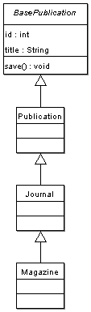

Ten rozdział przedstawia zaawansowane opcje modelu obiektowego Propela.
Domyślnie wszystkie obiekty 'Base' rozszerzają klasę propel.om.BaseObject, która dostarcza zbiór współdzielonych metod i atrybutów które śledzą ich modyfikacje. W niektórych przypadkach możesz wyszczególnić klasę rozszerzającą BaseObject; możesz to wykonać z poziomu definicji XML bazy danych:
<table name="book" idMethod="native" baseClass="bookstore.BookstoreComponent">
Pamietaj że musisz korzystać z zapisu "kropkowanej ścieżki" kiedy definiujesz nową klasę bazową, która musi być wcześniej dołączona do skryptu przed odwołaniem się do niej. Zapis ścieżki określa ścieżkę relatywnie do położenia include_path w PHP. Teraz wygenerowana klasa BaseBook będzie rozszerzać BookstoreComponent. Pamiętaj że BookstoreComponent musi rozszerzać BaseObject albo PHP zwróci błąd krytyczny(fatal errors) kiedy spróbujesz użyć wygenerowanego Obiektu lub klasy peer.
require_once 'bookstore/BookstoreComponent.php';
class BaseBook extends BookstoreComponent {
Domyślnie wszystkie klasy 'Base Peer' nie posiadają żadnej superklasy. Możesz sprecyzować klasę 'base peer' -- np. aby udostępnić dodatkową funkcjonalność używaną przez twój obiekt.
Podobnie jak w klasach obiektów 'Base', klasy 'Base peer' można zmienić w definicji XML:
<table name="book" idMethod="native" basePeer="BookstorePeer">
Jak możesz się spodziewać, teraz klasa BaseBookPeer rozszerza klasę BookstorePeer zamiast BasePeer. Ta klasa musi udostępnić wszystkie metody (public/protected) jak w BasePeer.
Propel udostępnia podstawowe wsparcie dla dziedziczenia obiektów w twoim modelu obiektów. Jest kilka sposobów na implementację klas i klas dziedziczących do tabel bazy danych. Propel korzysta z najbardziej skutecznego modelu z perspektywy wydajności zapytań i SQL'a: jedna tabela jest użyta dla wszystkich klas dziedziczących. W związku z tym twoja tabela musi posiadać wszystkie kolumny wymagane przez główną klasę i podklasy. Propel utworzy szkielet podklas, jednak musisz dodać logikę do klasy peer jeśli chcesz, żeby podklasy zawierały jedynie podzbiór informacji – tzn. domyślnie wszystkie podklasy będą zapełnione całym wierszem kolumn.
Musisz zdefiniować kolumnę, która będzie identyfikować klasę reprezentującą dany rekord; aby to uczynić użyj atrybutu strong>inheritance="single" (aktualnie "single" jest jedyną opcją inną niż domyślne "false"). Także jeśli drzewo dziedziczenia jest znane, powinieneś użyć tagu <inheritance> aby opisać hierarchie klas. Pamiętaj, że 'kluczowa' kolumna musi byc rzeczywistą kolumną w tabeli
<table name="publication"> <column name="id" type="INTEGER" primaryKey="true"/> <column name="class_key" type="INTEGER" inheritance="single"> <inheritance key="1" class="Journal" extends="bookstore.Publication"/> <inheritance key="2" class="Magazine" extends="bookstore.Journal"/> </column> <column name="title" type="VARCHAR" size="100"/> </table>
Ważne: musisz sprecyzować prefiks dla paczki kiedy wskazujesz klase dziedziczoną (extends="package.ClassName") tak aby te klasy mogły być prawidłowo dodane na początku definicji klasy dziedziczącej; jednak nie mozesz sprecyzować paczki dla klasy dziedziczonej, ponieważ Propel buduje jednocześnie tylko jedną paczkę (wyszczególnioną poprzez zmienną ${propel.targetPackage} w pliku build.properties) i jest wymogiem żeby klasa dziedziczona była częścią paczki którą własnie budujesz. Niewykluczone, że klasa dziedziczona może być częścią oddzielnej paczki.
Wynikiem kodu powyżej będzie stworzenie 2 klas -- BasePublicationPeer i BasePublication -- oraz 4 klas -- PublicationPeer, Publication, Journal (dziedziczy po Publication), i Magazine (dziedziczy po Journal). Te klasy to tak zwane końcówki (stub), które możesz rozszerzać

Zauważ że tylko klasa Peer została stworzona. Jeśli chcesz sie upewnić że twoje klasy dziedziczone będą działać jedynie zestawem kolumnami dla każdego rekordu, powinieneś nadpisać metodę BasePublicationPeer::populateObject() aby zapewnic indywidualne wypełnienie bazujące na klasie obiektu. Jednakże w wielu wypadkach sam fakt, że zwracane są obiekty prawidłowej klasy, jest wystarczający dla potrzeb twojej aplikacji.
Jeśli dziedziczenie jest dynamiczne lub nieznane możesz pominąć tag <inheritance> i przyjmuje się, że kluczowa kolumna powinna zawierać nazwę klasy -- korzystając z zapisu ścieżki "kropkowanej" (np. "bookstore.Journal", "myapp.entity.MyClassName"). Możesz także nadpisać getOMClass() aby zwracała nazwę klasy do wykonania bardziej złożonej logiki (lub zapytań).
Jeżeli chcesz narzucić używanie klas dziedziczonych, możesz zadeklarować "abstrakt" tabeli w modelu danych XML.
<table name="publication" abstract="true">
Ustalenie tablicy jako abstrakcyjnej wygeneruje obiekt abstrakcyjny w końcówce klasy i będzie wymagać abyś zaimplementował metodę getOMClass() w twojej klasie peer (jesli tego nie zrobisz, będzie wyrzucany wyjątek).